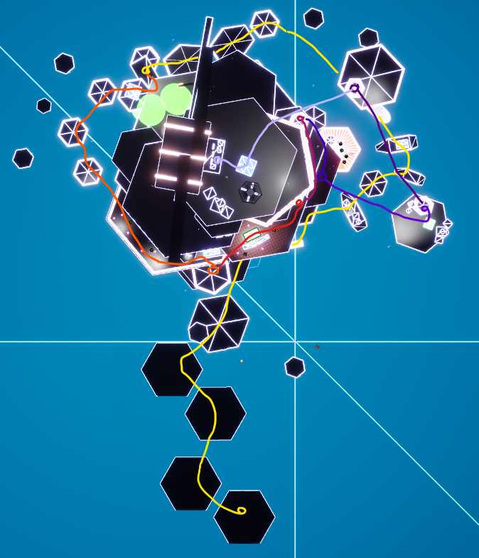
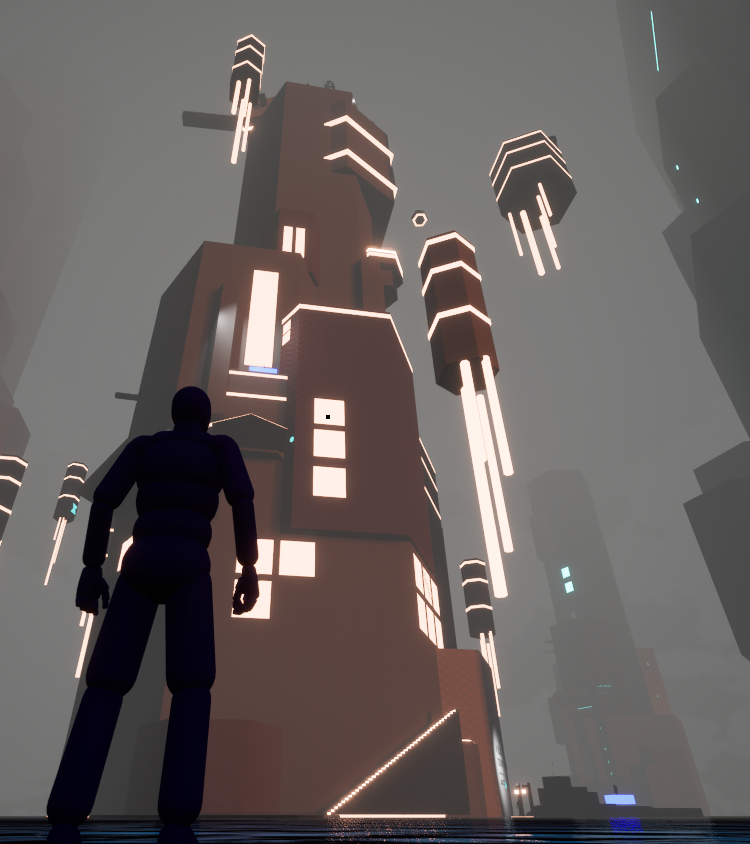
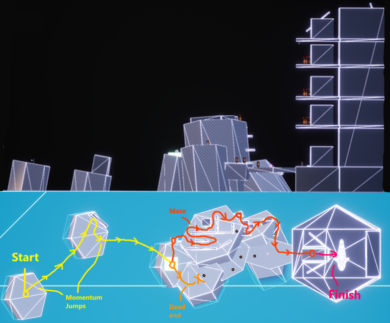
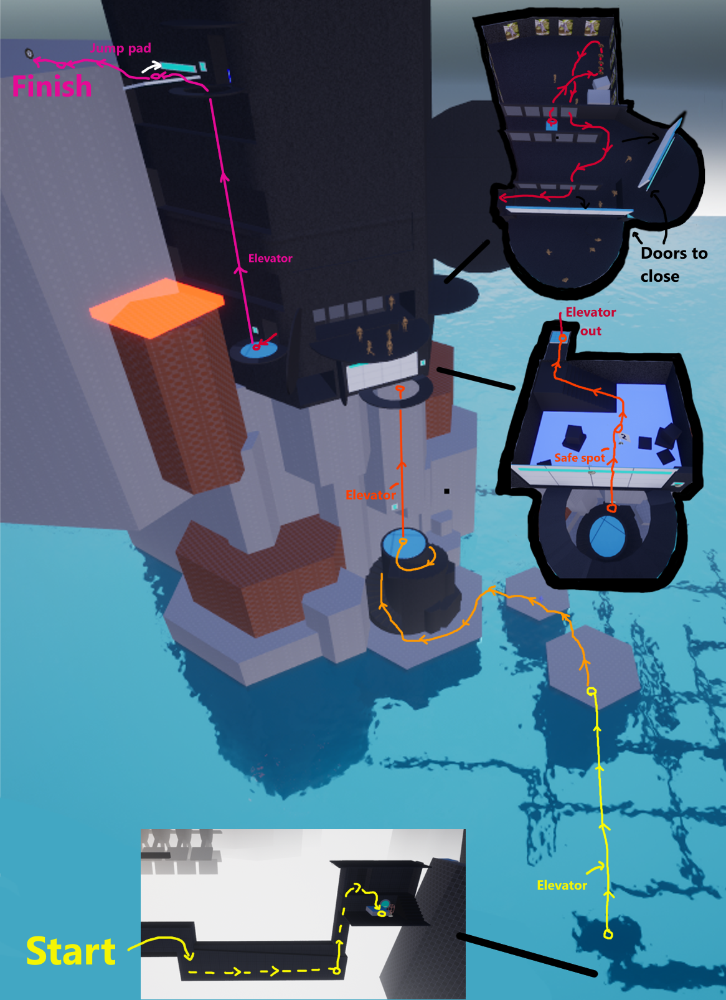
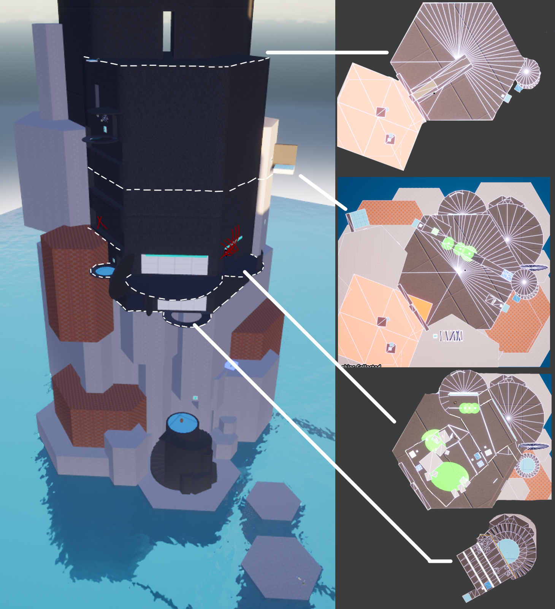
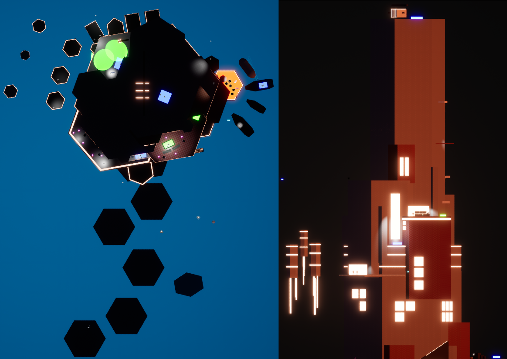
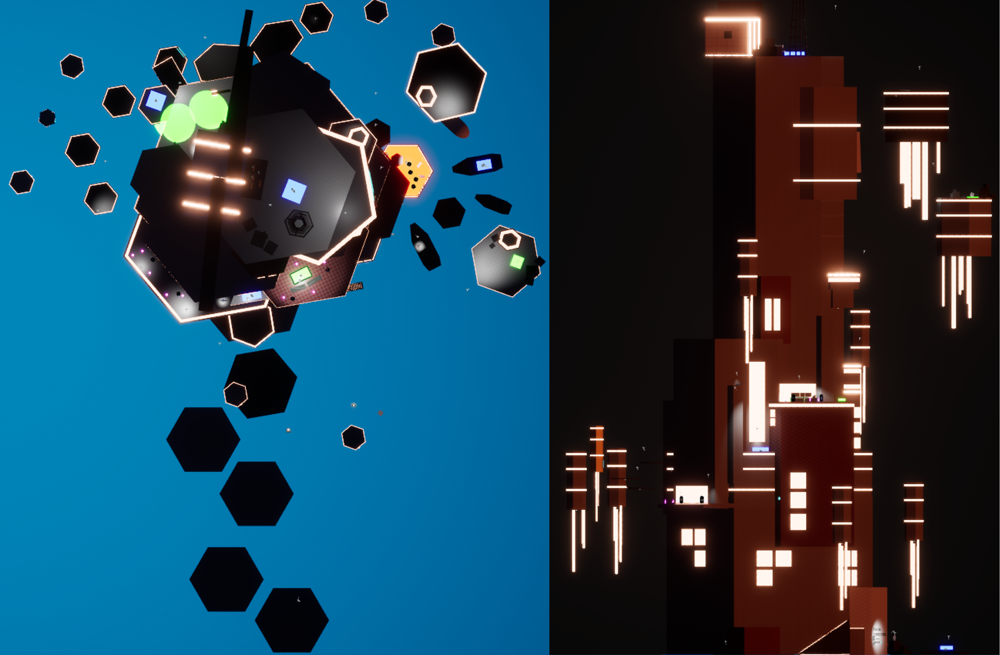

Project Overview
This level design project was created to hone my 3D level design skills, along with reinforcing the importance of starting by blocking out the level instead of going straight to graphics.
The specific design outcomes required for this level were an exploration section, a sneaking section, and an escape section.
I went for a cyberpunk style, with a mechanic side-focus on momentum jumps alongside the main mechanic of the energy-bow. I went through easily 5+ iterations with weekly playtesting and feedback.
Maps
There is only a top-down map due to the towering nature of the level. It shows how the player spirals up the tower and finally reaches the copter at the top.
The player starts at the bottom of the map on the yellow path, and each major elevation change is shown using a new path color.


Achievements
The three things I'm most proud of in this project are the sightlines, lighting and mechanical progression.
Sightlines: These guides the player up the tower, giving them their first and only major goal, reaching the top.
Lighting: Guides players through each minor section, acting similarly to yellow paint, though far more discreet.
Mechanical progression: Teaches the player how to use mechanics not commonly found in any other level, to the point
where the player can complete a gauntlet of jumps before reaching the end of the level.
Inspirations
Both BLAME ! and Vivarium were two huge aesthetical inspirations for this project, inspiring the repetitive enormous structures of this world.
Cyberpunk 2077 and Celeste were the other two inspirations, with the lighting and unfriendliness of the first, while taking inspiration from the gameplay of the latter.
Iterations #1. Blockout.

Results:
Started roughly blocking out the drawn map, also started spacing out the mechanics that will be seen later to see how they feel.
The scope was too large, so I worked on spacing out the sections for the players to move through. I planned to expand these later.
Feedback received:
- The pathing was really hard to follow, very unintuitive.
- The mechanics can be hard to pick up and there isn't much room to learn.
Iterations #2. Alpha.

Results:
- I struggled to change what I had built, so I started from scratch building up the areas with the knowledge of how much space I need for them.
- I also implemented a tutorial area for the player to learn the basics of the mechanics with zero consequences for failing, before needing to put them into practice.
- Lastly I started blocking out interior sections, sculpting a path for the player to move through.
Feedback received:
- The spaces were too small, and the editor wasn't built for such small rooms. The players struggled moving through them.
Iterations #3. Beta.

Results:
- I moved the level beginning to outside, looking onto the tower, and moved the tutorial to inside the building.
- I also made the path inside more linear, using different more reliable obstacles for the players to move through.
- I continued this interior section further up the tower, putting in chained jumps, corridors to unlock and a small escape section down the back of the tower.
Feedback received:
- With the majority of the spaces inside, players struggled to identify theming
- Additionally, the implementation of the momentum platforms was still too unreliable and players struggled.
Iterations #4. Gamma.

Results:
- Due to the non-stop issues with the theming and the mechanics, I decided to reset, and built a new tower.
- I made the entire level played outside the building, and made the momentum jumps vertical instead of horizontal, improving their playability and removing consequences for mistiming a jump.
- Lastly, I made some super basic lighting choices that looked amazing in Unreal Engine, so I stuck with it and made it the theme.
Feedback received:
- The majority of feedback was highly positive, though one section had too many AIs, and one landing section was too visually busy to tell where to land.
Iteration #5. Final.

Results:
- I tweaked the mechanic distribution, making earlier timed platform sections longer to make them more obviously a puzzle instead of a race.
- I expanded the later escape sequence, adding in timed platforms, more jumps and better timing and respawning.
- I added some moving copters to give the whole level more life.
- Lastly I added in a bit of narrative, a final copter to flies you away with some basic narrative here and there.
Feedback received:
- With the majority of the spaces inside, players struggled to identify theming
- Additionally, the implementation of the momentum platforms was still too unreliable and players struggled.